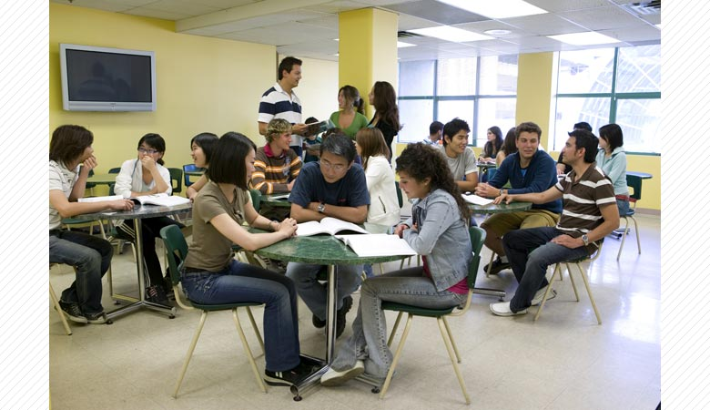
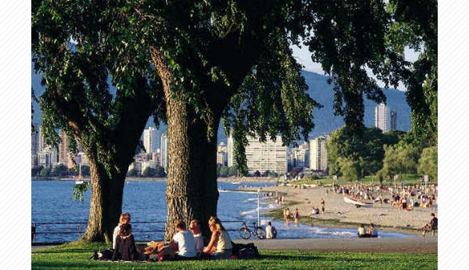

「英語を本気でモノにする」せっかくの留学・ワーキングホリデー、本物の学校でしませんか？
PGICは1994年の開校以来、そのオリジナリティ高い教育理念、カリキュラム、質の高いサポートに定評がある
世界各国からモチベーションの高い学生が集まるオンリー1の学校です。

徹底されたEnglish Only Policyで作りあげる完全英語環境
PGIC＝English Only Policyと言われるほどの徹底ぶり。
これによって英語力が全くない学生も1ヶ月後には英語で夢を見るようになります。
毎月の公式TOEIC®受験(無料)で帰国後の就活対策も完璧
PGICはTOEICの公開試験会場にもなっているため、在校生にはこれを無料で受けられます。
毎月受けることにより、帰国時にはTOEICスコアが900点を超える学生も多数います。

留学を通じて自分を変えたい
併設の塾（Global Life Studies）にて日本と海外の違い、国際社会で英語を使って生き抜くためのスキルを伝授。
日本人スタッフによる、日本語サポートで安心
日本人スタッフが日本語で学校のことから現地の生活まで万全のサポート体制でお待ちしております。
放課後の会話クラブやTalking Contest、ワークショップ(補講)で弱点を克服
地元カナダ人との無料会話クラブや街中で話した数を競い合うTalking Contestでたくさんのカナダ人と話し、生きた英語を身に付ける。
また発音強制や文法、リーディングなど毎日いろんなワークショップを無料で受けていただけます。
PGIC卒業生のサクセスストーリー
PGICの卒業生は初めの英語力に関係なく、数々の成功を収めています。
これらの卒業生のサクセスストーリーの多さ、内容こそがPGICのクオリティの証明です。